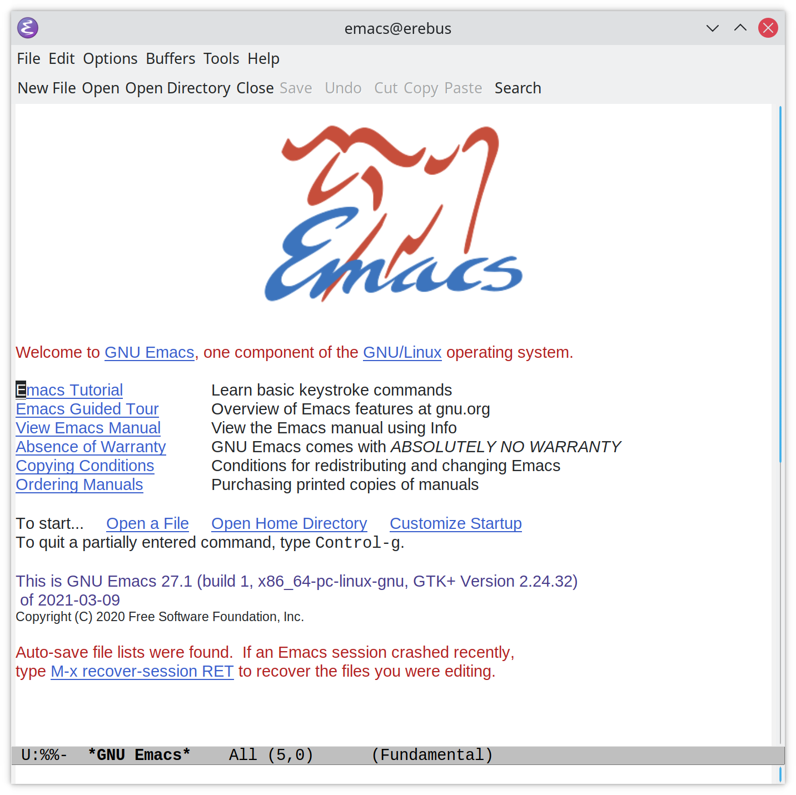

Emacs Scrollbar Artifact on Kubuntu
Table of Contents
What's this then?
I switch back and forth between Kubuntu and Ubuntu (Ubuntu seems to work better, but I like the aesthetics of Kubuntu) and one of the problems I had was that when I launched emacs in Kubuntu it had a permanent scrollbar in the center of the window that blocked out whatever text was there.

It's more of an annoyance than anything else but since it doesn't happen on Ubuntu I figured I'd try and fix it. It took me a couple of different searches to find the answer so I thought I'd document it in case I need to remember this later.
The Cause
This is the desktop that's causing the problem:

It turns out that it's because my monitors are of different resolutions and in order to be able to read anything on the higher-resolution monitor I had to set the display scale to 200%, but this causes a problem with the scaling of the widgets (at least that's what it said on the reddit post where I found the solution).
The Fix
The fix for me was to edit the ~/.local/share/applications/emacs.desktop file so that the EXEC line read:
Exec= /usr/bin/env GDK_SCALE= emacs
Once this was in place the artifact went away.

The Source
I linked to it above, but this is the reddit post where I found the fix: